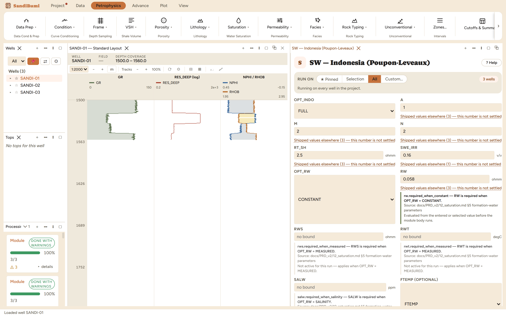
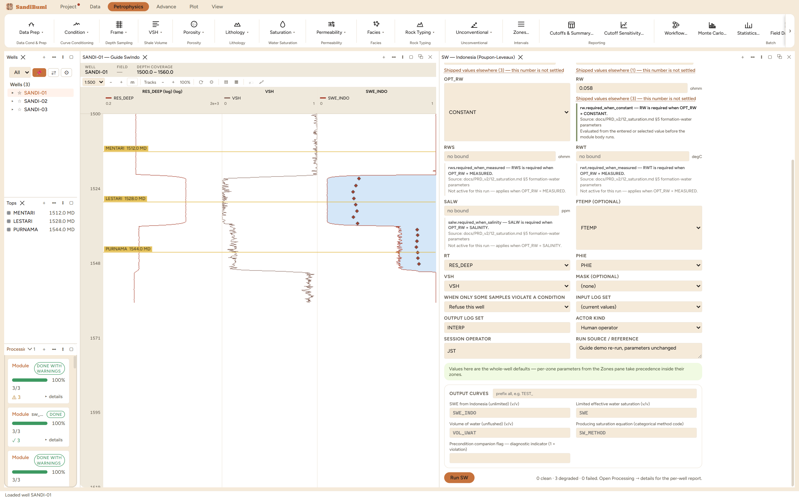

The Indonesia equation (Poupon and Leveaux, 1971): the field-standard shaly-sand saturation for fresh formation waters, built for exactly the kind of section this dataset imitates. It adds a shale conductivity path in parallel with the sand's, plus the cross term that makes the two interfere, so shaly intervals stop reading as water the way they do under Archie. If a study in a young clastic basin reports one resistivity saturation, it is usually this one.
1/RT = ( v/RT_SH + PHIE^M/(A·Rw)
+ 2·sqrt( v · PHIE^M / (A·Rw·RT_SH) ) ) · SW^N
v = VSH^(2−VSH) (FULL) v = VSH^2 (SIMPLE) v = VSH^(2−2·VSH) (TAR_SAND)
The equation works on effective porosity and takes the shale's own resistivity as a parameter, so the shale path is anchored to a measured number rather than an assumption. The exponent variant is part of the equation's identity: the three published forms weight the shale term differently, and the choice is declared, not tuned.

0 clean · 3 degraded: 92 or 93 samples per well computed below the 0.16 floor and were clamped-and-counted. Median SWE_INDO 0.6615. The populations tell the story: gas sand 0.0898, wet sand 0.7635. Against the effective-form Archie's wet-sand 0.8636 on identical picks, the shale term has moved even the cleanest rock by ten saturation units, because VSH is never quite zero there.
SELECT round(median(c.value), 4) FROM computed_curves c JOIN standard_curves sc ON c.well_id = sc.well_id AND c.depth = sc.depth WHERE c.curve_name = 'SWE_INDO' AND sc.gr < 60 AND sc.res_deep < 10 AND NOT isnan(c.value)
The exponent variant, measured: SIMPLE on the same picks lifts the median to 0.6712. One saturation unit here, because v = VSH² feeds the shale path less conductivity than the FULL form at this section's shale volumes; sections with higher VSH separate further. The form is a published identity to declare in the methodology table, not a knob. Restored to FULL, every number returns exactly.
